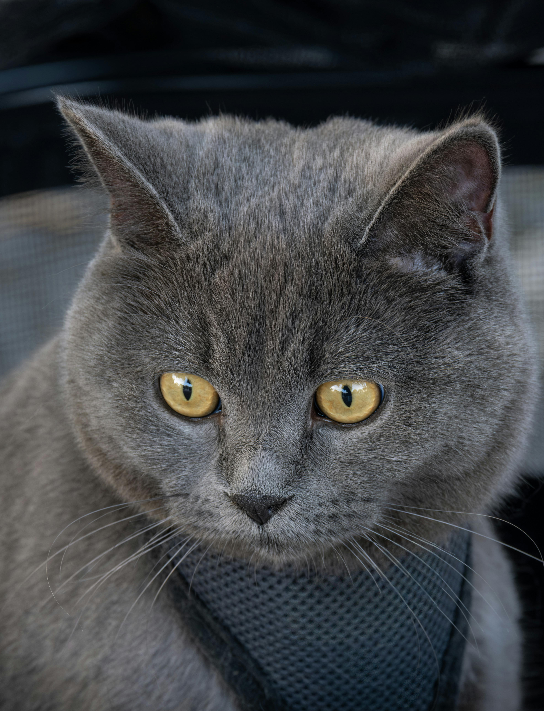
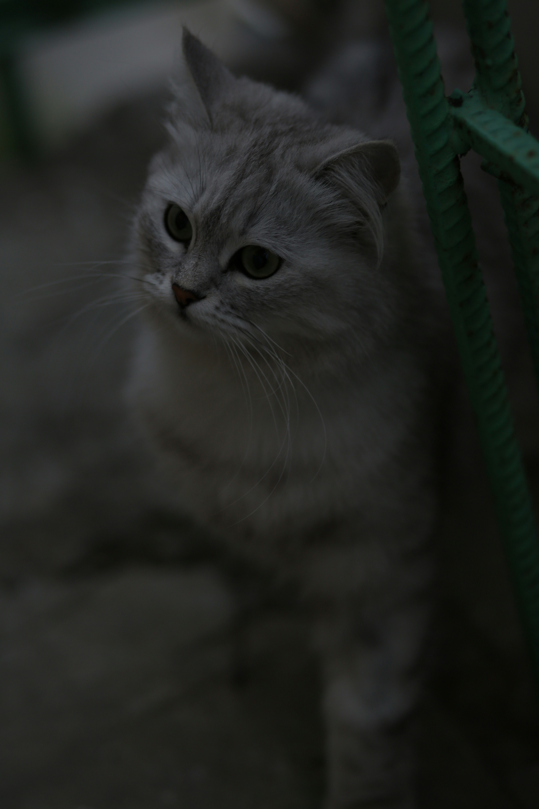
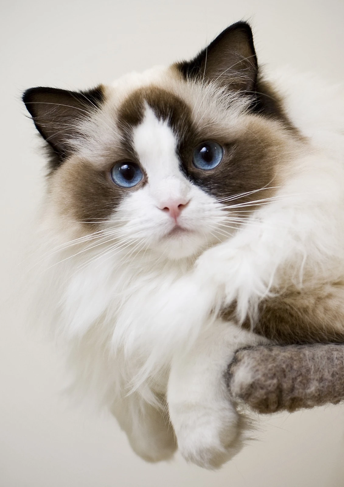
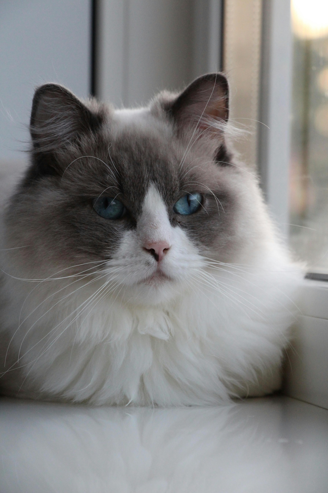
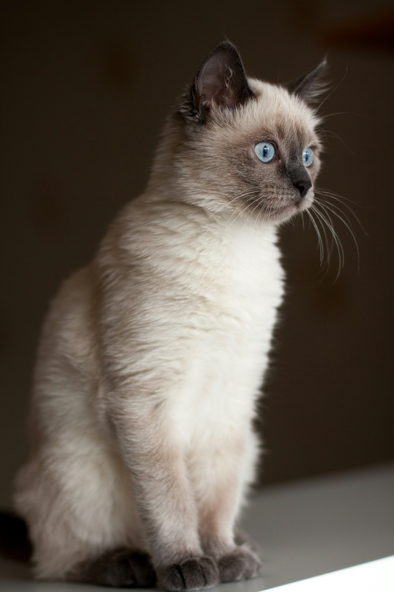
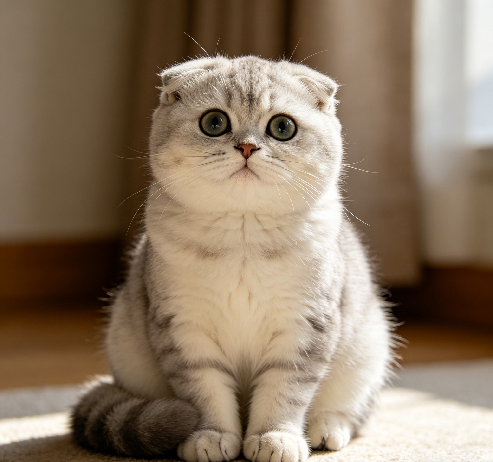
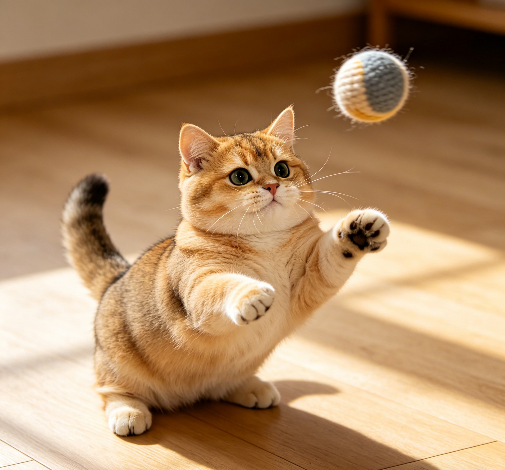

英国短毛猫 - 蓝猫
圆胖脸蛋的安静陪伴者
最经典的英短毛色，拥有圆圆的脸蛋和粗壮的四肢。性格温顺安静，适应能力强，非常适合在公寓内饲养。
🩺 饲养建议
- ⚖️ 控制体重： 极易发胖，过胖会导致心脏和关节负担，需定时定量喂食。
- 🧹 勤梳毛发： 虽然是短毛，但毛发浓密，掉毛量依然可观，需每周梳理。
📏 基础指标
平均体重：4 - 8 kg
平均寿命：12 - 15 年
粘人程度：⭐⭐⭐

英国短毛猫 - 银渐层
仙气飘飘的小煤气罐
底层绒毛为纯白色，毛尖带有黑色，看起来呈现银色光泽。性格同样温和，但通常比蓝猫稍微活泼好动一些。
🩺 饲养建议
- 💧 泪痕清理： 面部扁平容易流眼泪产生泪痕，需要经常用湿巾擦拭眼角。
- 🥣 肠胃敏感： 部分银渐层肠胃较弱，换粮需要遵循7天过渡法。
📏 基础指标
平均体重：3.5 - 7 kg
平均寿命：12 - 15 年
粘人程度：⭐⭐⭐⭐

布偶猫 - 双色
标志性的倒V脸仙女
脸部拥有标志性的倒V字白色斑块。以极其温顺的性格和像布娃娃一样被抱起时全身放松而得名，极度依赖主人。
🩺 饲养建议
- 🥣 典型玻璃胃： 肠道非常脆弱，极易软便，需要常备益生菌和优质猫粮。
- ✂️ 毛发打结： 细软的长毛极易打结，必须每天梳理底绒。
📏 基础指标
平均体重：4.5 - 9 kg
体型：大型长毛猫
粘人程度：⭐⭐⭐⭐⭐

布偶猫 - 重点色
蓝眼黑脸的小挖煤工
脸部、耳朵、四肢和尾巴带有深色（重点色），体态和性格与双色布偶完全一致，同样是粘人精。
🩺 饲养建议
- 🌡️ 越冷越黑： 重点色基因受温度影响，气温越低，毛发颜色越深，冬天要注意保暖。
- 🏠 纯室内： 缺乏野外生存和自我防御能力，严禁散养。
📏 基础指标
平均体重：4.5 - 9 kg
体型：大型长毛猫
粘人程度：⭐⭐⭐⭐⭐

缅因猫 (Maine Coon)
外表威武的温柔巨人
体型最大的家猫品种之一，拥有厚实的脚掌、猞猁般的耳毛和蓬松的尾巴。虽然外表威猛霸气，但声音细小如小鸟，性格非常稳重友善。
🩺 饲养建议
- ❤️ 心脏健康： 易患肥厚型心肌病（HCM），每年需进行心脏超声体检。
- 🛁 洗澡工程： 体型巨大且毛发防水，洗澡和吹干对体力是极大的考验。
📏 基础指标
体长：可超过 1 米
平均体重：6 - 11 kg
成熟期：需 3-5 年才完全发育

暹罗猫 (Siamese)
活泼好动的小话痨
原产于泰国，体态修长。被誉为"猫中之狗"，智商很高，甚至可以训练捡球。极度依赖人类，并且非常喜欢用叫声和主人"聊天"。
🩺 饲养建议
- 🗣️ 噪音预警： 叫声大且频繁，如果不喜欢吵闹的环境，请谨慎饲养。
- 🌡️ 保暖防黑： 同样携带重点色基因，温度低时会全身变黑，冬天需穿衣服保暖。
📏 基础指标
平均体重：3 - 5.5 kg
平均寿命：15 - 20 年
粘人程度：⭐⭐⭐⭐⭐

英国短毛猫 - 金渐层
金光闪闪的小太阳
底层绒毛为奶黄色，毛尖带有金色，整体呈现温暖的金色光泽。性格和蓝猫一样温顺，但外形更加华丽，是近年来最受欢迎的英短色系之一。
🩺 饲养建议
- ⚖️ 控制饮食： 和蓝猫一样容易发胖，需定时定量喂食，避免零食过量。
- 💧 泪痕管理： 面部结构扁平，容易产生泪痕，需定期清理眼角。
📏 基础指标
平均体重：4 - 8 kg
平均寿命：12 - 15 年
粘人程度：⭐⭐⭐⭐

波斯猫 (Persian)
雍容华贵的猫中贵族
最古老的猫品种之一，拥有华丽蓬松的长毛和扁平的面部。性格安静温和，喜欢安静地趴在沙发上观察主人，是典型的"室内猫"。
🩺 饲养建议
- ✂️ 每日梳毛： 长毛极易打结，必须每天梳理，否则会出现严重的毛球问题。
- 💧 泪痕清理： 扁脸结构导致泪管堵塞，每天需用湿棉片擦拭眼部。
📏 基础指标
平均体重：3.5 - 7 kg
平均寿命：12 - 17 年
粘人程度：⭐⭐⭐

金吉拉 (Chinchilla)
绿宝石眼的银色精灵
波斯猫的一个色系分支，底层绒毛为纯白色，毛尖带有黑色，呈现迷人的银色光泽。标志性的翡翠绿眼睛和黑色眼线让它们看起来格外优雅。
🩺 饲养建议
- 🧹 毛发护理： 长毛需要每天梳理，换毛期掉毛量巨大。
- 💧 泪痕严重： 扁脸导致泪痕问题突出，需每天清理，否则毛发会被染色。
📏 基础指标
平均体重：3 - 6 kg
平均寿命：12 - 15 年
粘人程度：⭐⭐⭐⭐

苏格兰折耳猫 (Scottish Fold)
折耳小猫头鹰
因软骨基因导致耳朵向前折叠，看起来像猫头鹰。脸型圆润，眼睛又大又圆，表情呆萌。性格温和安静，喜欢像人一样"坐"着。
🩺 饲养建议
- 🦴 骨骼问题： 折耳基因会导致软骨发育异常，需定期体检，关注关节健康。
- 🚫 繁育伦理： 严禁两只折耳猫交配，会严重加重遗传疾病。
📏 基础指标
平均体重：3 - 6 kg
平均寿命：11 - 14 年
粘人程度：⭐⭐⭐⭐

曼基康矮脚猫 (Munchkin)
柯基同款小短腿
因基因突变导致四肢短小，但脊椎和内脏与其他猫完全一样。虽然腿短，但奔跑速度和跳跃能力并不差，性格活泼开朗，好奇心极强。
🩺 饲养建议
- ⚖️ 控制体重： 短腿承重能力有限，过胖会加重关节负担。
- 🦴 保护脊椎： 避免从高处跳下，可提供台阶或坡道辅助上下。
📏 基础指标
平均体重：3 - 5 kg
平均寿命：12 - 15 年
粘人程度：⭐⭐⭐⭐

孟加拉豹猫 (Bengal)
家养的小豹子
由亚洲豹纹猫与家猫杂交培育而成，拥有华丽的豹纹或大理石纹被毛。性格极其活泼，精力充沛，智商很高，需要大量运动和精神刺激。
🩺 饲养建议
- 🏃 极高运动量： 需要猫爬架、互动玩具和大量陪玩时间，否则会拆家。
- 🧠 精神刺激： 智商极高，需要益智玩具和训练来消耗脑力。
📏 基础指标
平均体重：4 - 8 kg
平均寿命：12 - 16 年
粘人程度：⭐⭐⭐⭐

斯芬克斯无毛猫 (Sphynx)
外星来的小精灵
因基因突变导致全身几乎无毛，皮肤皱褶且温暖。性格极其粘人，被称为"猫中之狗"的升级版，会像小狗一样迎接主人，冬天喜欢钻被窝取暖。
🩺 饲养建议
- 🧴 皮肤护理： 无毛皮肤容易出油，需每周洗澡，注意防晒和保暖。
- 🌡️ 温度敏感： 怕冷也怕晒，冬天需穿衣保暖，夏天需防晒。
📏 基础指标
平均体重：3.5 - 7 kg
平均寿命：8 - 14 年
粘人程度：⭐⭐⭐⭐⭐